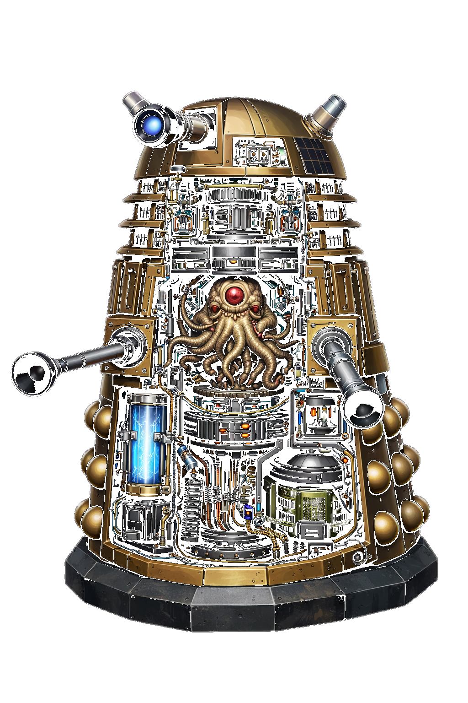
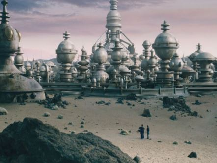

| Empresa | Cargo | Período | Principais Atividades | Resultados/Impactos |
|---|---|---|---|---|
| Império Dalek | Analista de Operações e Engenharia Mecânica | Experiência contínua | - Aplicação de conhecimentos em sistemas mecânicos para otimização de unidades operacionais
- Suporte técnico em operações de larga escala - Monitoramento e análise de desempenho estrutural e funcional |
- Melhoria na eficiência operacional das unidades
- Redução de falhas estruturais em ambientes extremos - Aumento da durabilidade e desempenho em campo |
| Comando Supremo da Time War | Unidade de Combate Intertemporal | Projetos estratégicos |
- Participação em conflitos de alta complexidade contra os Time Lords
- Adaptação a diferentes linhas temporais e cenários de guerra - Aplicação de estratégias ofensivas em múltiplas dimensões |
- Alta capacidade de adaptação a cenários variáveis
- Execução eficaz de operações em contextos não lineares - Contribuição para objetivos estratégicos em larga escala |

